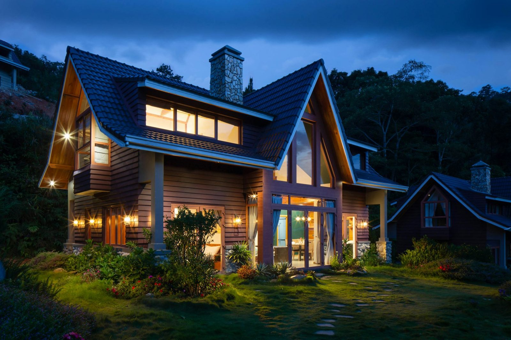

5월 14일, 한국토지주택공사(LH)가 인천계양 테크노밸리 공공주택지구 현장을 특별점검했다. 이유는 단순하다 — A2·A3블록의 입주 예정 시점이 올해 12월이고, 인천계양이 3기 신도시 중 첫 입주지가 된다. 정책 발표로부터 7년 만에 한 도시에서만 첫 열쇠가 돌아가고, 나머지 사업지는 여전히 초기 공사 단계이거나 일부는 허허벌판으로 남아 있다.
왜 계양이 먼저고, 왜 나머지는 아닌가
3기 신도시 — 남양주왕숙, 하남교산, 고양창릉, 부천대장, 인천계양과 이후 추가된 곳들 — 는 2018~2019년 수도권 주택공급 압력에 대한 답으로 발표됐다. 계양은 원래 5곳 중 가장 작았다. 약 335헥타르에 1만 7천 호 규모. 작은 스케일은 보상이 빠르고, 부지 조성이 빠르고, 시공이 빠르다. 대형 사업지들이 장기간 토지 분쟁과 인프라 교착에 갇혀 있는 동안, 계양은 각 단계를 가장 적은 정체로 통과했다.

시사점이 불편하다. 3기 신도시는 동시 공급 프로그램으로 설계됐지만, 실제 인도 패턴은 순차적 — 어쩌면 매우 순차적 — 이다. 계양이 2026년 12월에 떨어지고 큰 사업지들이 현 속도로 간다면, 나머지 프로그램의 실질 공급 효과는 수년 간격으로 도착할 것이다. 30만 호 일괄 답안으로 설계된 정책이 시차 두고 열리는 연속극으로 구현되고 있다.
신도시에 가장 먼저 들어오는 것
신도시에서 첫 입주 물결은 집을 둘러싼 자재와 서비스에 대한 조용한 스트레스 테스트다. 빌트인 가구, 욕실 기구, 바닥재, 조명 — LH 공공주택 사양 목록은 일찍 잠기고 물량으로 굴러간다. 수년 전 LH 입찰을 따낸 국내 공급사들에게 12월은 인도 마감이다. 다음 공급 사이클 — 같은 지구 안에서 보통 1~2년 뒤 열리는 민간 블록 — 에게는, 공공주택에 깔린 브랜드가 모델하우스를 도는 민간 분양자들의 사실상 레퍼런스가 되느냐가 질문이다.
"첫 입주 도시에서 사양 사전이 쓰인다. 그 뒤 열 도시는 조용히 그것을 베낀다."
두 번째 시험은 도시 스케일에서 작동한다. 1만 7천 호짜리 신도시가 첫 입주민을 받는 시점에, 학교·마트·대중교통 지선·기본 의료 인프라는 아직 부분 가동이다. 초기 정착민의 생활 경험은 이 도시의 향후 10년 평판을 만든다. 계양은 김포와 서울 서부 벨트에 가깝다는 이점이 있지만, 입주 후 2~3년 불편이라는 신도시 표준 패턴은 여전히 발생할 가능성이 높다. LH와 인천이 그 간격을 어떻게 관리하느냐가, 계양이 목적지가 되느냐, 아니면 아직 시공 중인 더 큰 사업지들에 대한 반면교사가 되느냐를 결정할 것이다.
새 도시가 작동한다는 것의 문화적 의미
신도시는 주택공급 이벤트만이 아니다. 사람들이 어떻게 함께 사는가에 대한 제안이다 — 낯선 이들이 어떻게 이웃이 되는지, 장소가 어떻게 기억을 갖게 되는지, 한 세대가 자란 곳을 떠나 어디에 첫 뿌리를 내리는지. 1990년대 1기 신도시 — 분당, 일산, 평촌 — 는 자신의 문화적 결을 만드는 데 15~20년이 걸렸다. 2000년대 2기 신도시는 여전히 그 결을 협상 중이다. 계양은 그 긴 대화를 12월에 시작한다.

도시 형태의 문제도 있다. 3기 신도시는 도면상으로는 저층 거리와 분리된 단일 아파트 단지라는 2기 신도시 템플릿에서 벗어나기로 했다. 복합용도 포디움, 보행 그리드, 통합 환승. 계양의 첫 인도는 그 설계 야심이 계획에서 시공까지의 긴 통로를 살아남았는지 테스트할 첫 기회다. A2·A3 초기 조감도는 주거 유형이 유지된 것을 보여주지만, 가로 레벨 상업 믹스는 여전히 운영자와 협상 중이다.
여기서부터 무엇을 봐야 하나
세 가지 지표가 계양이 매끄럽게 열릴지를 말해줄 것이다. 첫째, 교통 정시성 — 김포 골드라인과 예정된 버스 지선이 연말 시즌 전에 안착해야 첫 입주민의 출퇴근이 가능하다. 둘째, 학구 배정 — 인천교육청이 새 학생 물결을 옛 학구로 통학시키지 않고 흡수할 수 있는가. 셋째, 상업 입점률 — 적어도 식료품과 기본 서비스의 앵커 테넌트가 첫 입주 후 60일 안에 여는가. 셋 다 시공 문제가 아니다. 그 점이 핵심이다. 신도시의 어려운 부분은 건물이 끝난 후에 시작된다.
편집장 코멘트
ARCHINODE 입장에서 계양의 12월 입주는 단기 기회이자 장기 레퍼런스 이벤트다. 단기적으로 — 신도시에 정착하는 가구에 노출되고 싶은 브랜드는 입주 첫 6개월에 콘텐츠와 파트너십을 맞춰야 한다. 그때가 입주민이 가구·조명·데코를 적극적으로 선택하는 시기다. 장기적으로 — 여기 공공주택을 앵커링하는 사양과 브랜드 선택이 이후 열릴 모든 3기 신도시의 소비자 기대를 조용히 형성할 것이다. 무엇이 깔리는지 보고, 첫 입주민이 그것을 어떻게 말하는지 보라.